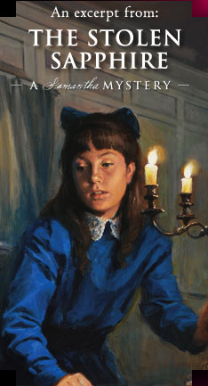

Samantha and Nellie encounter a strange boy just before they set sail for Europe
As Samantha glanced at him, she felt a shock of surprise. She was almost sure that she recognized his tweed cap and blue scarf. It was the same boy she’d run into a few blocks before.
How did he get here? she wondered. He was walking in the other direction. A sudden fear swept over her, chilling her even more than the wind-blown snow. Is he following us?
Samantha looked around for the policeman who patrolled this neighborhood. She didn’t see him anywhere, and the snow seemed to have driven everyone else inside. She and Nellie were alone with this strange boy. Samantha reached for Nellie’s arm, hoping to steer her quickly to the other side of the street.
Nellie, however, fixed her eyes on the boy as he pulled the scarf from his face. “Oh! It’s you, Jamie!” she exclaimed. “I hardly recognized you.”
Samantha wasn’t sure whether Nellie sounded relieved or worried.
Hands in his pocket, the boy walked toward them. “Aye, it’s me,” he told Nellie. “But it’s you who looks different, Nellie O’Malley.”
Nellie shrugged, but said nothing.
“Is it true you’re goin’ across the sea? Back to where we came from?” he asked, drawing so close that he now towered over Nellie.
Nellie nodded.
“I thought so,” the boy said with satisfaction. “I saw you and your friend when you was shoppin’ a few days ago, and I heard the lady with you talkin’ about it. I said to myself, that’s Nellie O’Malley, sure as life, and it looks like she’s done all right for herself.” The boy glanced at the neighboring houses. “When they sent me to deliver your package, I saw you’d done more than all right. You live in that fine house right on the park, don’t you?”
“Jamie—“ Nellie protested.
Scowling, the boy interrupted her. “I ain’t askin’ for money. I only want to talk to you.” He looked pointedly at Samantha. “Alone.”
Samantha remembered all of Aunt Cornelia’s warnings about strangers. “We should go home,” she whispered to Nellie.
“It’s all right,” Nellie whispered back. “I know him.” Then Nellie told the boy, “I can’t leave my friend.”
The boy pointed at Samantha. “You stay there,” he told her. Then he looked at Nellie. “And you come over here.” He jerked his head, and Nellie followed him a few feet into the narrow side yard between the houses.
The falling snow stung Samantha’s cheeks as she stood alone on the sidewalk. Nellie’s back was to her, but Samantha could see that the boy had a hard, determined expression on his face. She watched as he reached into his coat and pulled out a small package.
What does he want? Samantha wondered as she saw Nellie shake her head.
Feeling increasingly uneasy, Samantha stomped her boots on the frozen sidewalk and tried to warm her icy feet. The wind was beginning to blow harder, and as she turned her face from the snow, she was relieved to see the neighborhood policeman. He was coming toward them, walking quickly down the other side of the street. He paused when he saw Samantha, Nellie, and the boy in the threadbare coat.
The policeman hesitated for a moment as he peered through the driving snow. Then he called out, “Hey! You, boy!”
When the boy saw the patrolman heading in his direction, he said something to Nellie. Then he ran away through the side yard, back behind the houses.
“Stop!” the policeman shouted, racing after him.
The policeman disappeared behind the houses. But in a few minutes, he returned to Samantha and Nellie. His round face was red and he was breathing hard. “Was that boy bothering you young ladies?” he demanded.
Samantha looked at Nellie questioningly. “No,” Nellie answered. “He just asked for some help.”
“Help? Is that what he calls it?” the policeman asked. “Well, don’t trust him. Boys like him would rather beg and steal than do an honest day’s work.” He looked at the girls closely. “I’ve seen you young ladies often enough. You live nearby, don’t you?”
“On the next block,” said Samantha.
“Well. You’d better get home now. I’ll make sure that young fellow doesn’t bother you again.” The policeman waited at the corner, pacing back and forth and watching as the girls hurried down the street.
As soon as they were far enough away, Samantha asked Nellie, “Who was that boy?”